Chapter 2 Chapter 2: Basic geospatial operations in R
2.1 Introduction
In this chapter we get your hands dirty with spatial manipulation of data. Thus far, our data manipulation exercises (using dplyr) were such that you might be familiar with, from your earlier exposures to data analysis. For example, linking datasets using a common column is a task which you can perform on spatial or non-spatial data. These are referred to as attribute operations. However today we will explore some exercises in data manipulation which are specific to spatial data analysis. We will be learning some key spatial operations, a set of functions that allow you to create new and manipulate spatial data.
The main objectives for this chapter are that by the end you will have:
- met a new format for accessing boundary data, called geojson.
- carried out spatial operations such as:
- subset points that are within a certain area,
- created new polygons by generating buffers around points,
- counted the number of points that fall within a polygon (known as points in polygon),
- finding the nearest feature in one data set to observations in another data set, and
- measured distance between points in a map.
- made interactive point map with leaflet.
- used geocoding methods to translate text fields such as addresses into geographic coordinates.
These are all very useful tools for the spatial crime analyst, and we will hope to demonstrate this by working through an example project.
The packages we will use in this chapter are:
# Packages for reading data and data carpentry
library(readr)
library(dplyr)
library(janitor)
library(units)
library(purrr)
# Packages for handling spatial data and for geospatial carpentry
library(sf)
library(tidygeocoder)
# Packages for mapping and visualisation
library(leaflet)
library(RColorBrewer)
# Packages providing accesss to spatial data
library(osmdata)2.2 Exploring the relationship between alcohol outlets and crime
The main example we will work through most of the chapter considers the assumption that licenced premises which serve alcohol are associated with increased crimes. We might have some hypotheses about why this may be.
One theory might be that some of these serve as crime attractors.
Crime attractors are particular places, areas, neighbourhoods, districts which create well-known criminal opportunities to which strongly motivated, intending criminal offenders are attracted because of the known opportunities for particular types of crime. Examples might include bar districts; prostitution areas; drug markets; large shopping malls, particularly those near major public transit exchanges; large, insecure parking lots in business or commercial areas. The intending offender goes to rough bars looking for fights or other kinds of ‘action.’
On the other hand, it is possible that these areas are crime generators.
Crime generators are particular areas to which large numbers of people are attracted for reasons unrelated to any particular level of criminal motivation they might have or to any particular crime they might end up committing. Typical examples might include shopping precincts; entertainment districts; office concentrations; or sports stadiums.
To read further in crime attractors vs crime generators turn to the recommended readings by Brantingham and Brantingham (1995) and Newton (2018). There have since been more developments, for example about crime radiators and absorbers as well (watch this risky places lecture from Kate Bowers (n.d.) to learn more!)
It’s possible that some licensed premises attract crimes, due to their reputation. However it is also possible that some of them are simply located in areas that are busy, attracts lots of people for lots of reasons, and crimes occur as a result of an abundance of opportunities instead.
In any case, what we want to do is to examine whether certain outlets have more crimes near them than others. We can do this using open data, some R code, and the spatial operations discussed above. We will return to data from Manchester, UK for this example, however as we will be using Open Street Map, you can easily replicate this for any other location where you have point-level crime data.
2.3 Get the data
We will be using three different sources of data in this chapter. First, we will acquire our crime data, which is what we used in the previous chapter, so this should be familiar. Then we will meet the new format for boundary data, geojson. And finally, we will look at Open Street Map for data on our points of interest.
2.3.1 Reading in crime data
crimes <- read_csv("data/2019-06-greater-manchester-street.csv")Notice that in this case the columns are spelled with upper case “L.” You should always familiarise yourself with your data set to make sure you are using the relevant column names. You can see just the column names using the names() function like so :
names(crimes)## [1] "Crime ID" "Month" "Reported by"
## [4] "Falls within" "Longitude" "Latitude"
## [7] "Location" "LSOA code" "LSOA name"
## [10] "Crime type" "Last outcome category" "Context"So messy! Let’s use our handy helpful clean_names() function from the janitor package:
crimes <- crimes %>% clean_names()
names(crimes)## [1] "crime_id" "month" "reported_by"
## [4] "falls_within" "longitude" "latitude"
## [7] "location" "lsoa_code" "lsoa_name"
## [10] "crime_type" "last_outcome_category" "context"Much better! Now let’s get some boundary data for Manchester.
2.3.2 Meet a new format: geojson
GeoJSON is an open standard format designed for representing simple geographical features, along with their non-spatial attributes. It is based on JSON, the JavaScript Object Notation. It is a format for encoding a variety of geographic data structures and is the most common format for geographical representation in the web. Unlike ESRI shapefiles, with GeoJSON data everything is stored in a single file.
Geometries are shapes. All simple geometries in GeoJSON consist of a type and a collection of coordinates. The features include points (therefore addresses and locations), line strings (therefore streets, highways and boundaries), polygons (countries, provinces, tracts of land), and multi-part collections of these types. GeoJSON features need not represent entities of the physical world only; mobile routing and navigation apps, for example, might describe their service coverage using GeoJSON.
To tinker with GeoJSON and see how it relates to geographical features, try geojson.io, a tool that shows code and visual representation in two panes.
Let’s read in a geoJSON spatial file, again from the web. This particular geojson represents the wards of Greater Manchester.
manchester_ward <- st_read("data/wards.geojson")## Reading layer `wards' from data source `/Users/reka/Desktop/crime_mapping/crime_mapping/data/wards.geojson' using driver `GeoJSON'
## Simple feature collection with 215 features and 12 fields
## Geometry type: POLYGON
## Dimension: XY
## Bounding box: xmin: 351664 ymin: 381168.6 xmax: 406087.5 ymax: 421039.8
## Projected CRS: OSGB 1936 / British National GridLet’s select only the city centre ward, using the filter() function from dplyr
city_centre <- manchester_ward %>%
filter(wd16nm == "City Centre")Let’s see how this looks, using the plot() function:
plot(st_geometry(city_centre))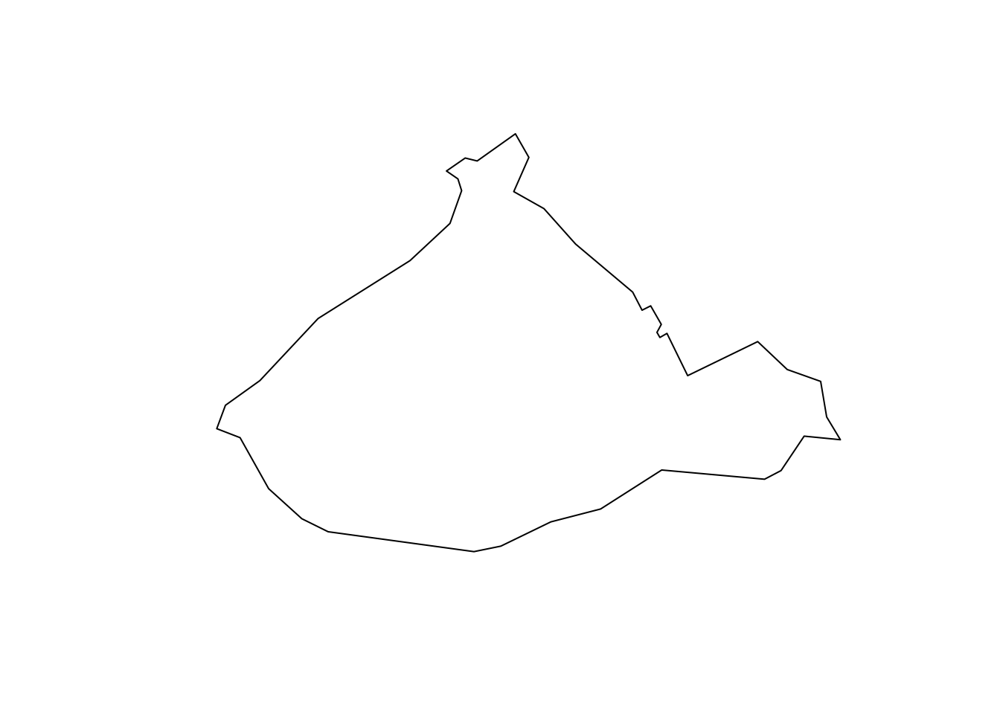
Now we could use this to make sure that our points are in fact only licensed premises in the city centre. This will be your first spatial operation. Excited? Let’s do this!
2.3.3 Open Street Map and points of interest
To map our licenced premises we will be accessing data from Open Street Map, a database of geospatial information built by a community of mappers, enthusiasts and members of the public, who contribute and maintain data about all sorts of environmental features, such as roads, green spaces, restaurants and railway stations. You can see all about open street map on their online mapping platform (https://www.openstreetmap.org/). One feature of Open Street Map, unlike Google Map, is that the underlying data is openly available for download for free. In R, we can take advantage of a package written specifically for querying Open Street Map’s API [[[REF SAM CHAPTER HERE]]], called osmdata.
If we load the package osmdata we can use its functions to query the Open Street Map API. To find out more about the capabilities of this package, see the package documentation and the associated vignette online: https://cran.r-project.org/web/packages/osmdata/vignettes/osmdata.html. While this is outside the scope of our chapter here, you may want to explore osmdata more, as it is an international database, and has lots of data may come in handy for research and analysis.
Here we focus specifically on Manchester. To retrieve data for a specific area, we must create a bounding box. You can think of the bounding box as a box drawn around the area that we are interested in (in this case, Manchester, UK) which tells the Open Street Map API that we want everything inside the box, but nothing outside the box.
So, how can we name a bounding box specification to define the study region? One way to do this is through a search term. Here, we want to select Greater Manchester, so we can use the search term “greater manchester united kingdom” within the getbb() function (stands for get bounding box). Using this function we can also specify what format we want the data to be in. In this case, we want a spatial object, specifically an sf polygon object (from the sf package), which we name bb_sf.
bb_sf <- getbb(place_name = "greater manchester united kingdom", format_out = "sf_polygon")We can see what this bounding box looks like by plotting it:
plot(st_geometry(bb_sf))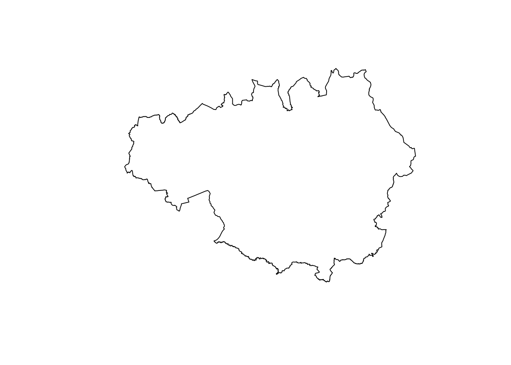
We can see the bounding box takes the form of Greater Manchester. We can now use this to query data from the Open Street Map API using the opq() function. The function name is short for ‘Overpass query,’ which is how users can query the Open Street Map API using search criteria.
Besides specifying what area we want to query with our bounding box object(s) in the opq() function, we must also define the feature which we want returned. Features in Open Street Map are defined through ‘keys’ and ‘values.’ Keys are used to describe a broad category of features (e.g. highway, amenity), and values are more specific descriptions (e.g. cycleway, bar). These are tags which contributors to Open Street Map have defined. A useful way to explore these is by using the comprehensive Open Street Map Wiki page on map features (https://wiki.openstreetmap.org/wiki/Map_Features).
We can select what features we want using the add_osm_feature() function, specifying our key as ‘amenity’ and our value as ‘bar.’ We also want to specify what sort of object (what class) to get our data into, and as we are still working with spatial data, we stick to the sf format, for which the function is osmdata_sf(). Here, we specify our bounding box as the bb_sf object we created above [^1]. [^1]: If you use the bounding box obtained through getbb() one can subsequently trim down the outputs from add_osm_feature() using trim_osmdata(). For instance, we could add trim_osmdata(bb_poly = bb_sf) to our initial query.
osm_bar_sf <- opq(bbox = bb_sf) %>% # select bounding box
add_osm_feature(key = 'amenity', value = 'bar') %>% # select features
osmdata_sf() # specify classThe resulting object osm_bar_sf contains lots of information. We can view the contents of the object by simply executing the object name into the Console.
osm_bar_sfThis confirms details like the bounding box coordinates, but also provides information on the features collected from the query. As one might expect, most information relating to bar locations has been recorded using points (i.e. two-dimensional vertices, coordinates) of which we have 576 at the time of writing. We also have around fifty polygons. For now, let’s extract the point information.
osm_bar_sf <- osm_bar_sf$osm_points We now have an sf object with all the bars in our study region mapped by Open Street Map volunteers, along with ~90 variables of auxiliary data, such as characteristics of the bar (e.g.: brewery, or cocktail) or whether it offers delivery as well as address and contact information, amongst many others. Of course, it is up to the volunteers whether they collect all these data, and in many cases, they have not added information (you may see lots of missing values if you look at the data). Given the work relies on voluntaries there are unavoidably some accuracy issues (including how up to date the information may be). Nevertheless, when the details are recorded, they provide rich insight and local knowledge that we may otherwise be unable to obtain.
One column we should consider is the name which tells us the name of the bar. There are missing values here as well, and for this example, we will choose to exclude those lines where there is no name included, as we would like at least a little bit of context around our bars. To do this, perform an attribute operation using thefilter() function:
osm_bar_sf <- osm_bar_sf %>% filter(!is.na(name))We are still left with 259 bars in our data set.
2.4 Attribute operations
We’ve mentioned above that we are using attribute operations. These are changes to the data which we make based on manipulation of elements in the attribute table. For example, the use of filter() is an attribute operation, because we rely on the data in the attribute table in order to accomplish this task.
For example, let’s say we want to focus only on violent crime. To do this, we use the information in the attribute table, namely the values for the crime_type variable for each observation (crime) in our data set.
crimes <- crimes %>% filter(crime_type == "Violence and sexual offences")With the above, we select only those crimes (rows of the attribute table) where the crime_type variable meets a certain criteria (takes the value of “Violence and sexual offences”). Spatial operations on the other hand manipulate the geometry part of our data. We rely on the spatial information to accomplish the tasks of interest. In the next section, we will work through some examples of these.
2.5 Spatial operations
Spatial operations are a vital part of geocomputation. Spatial objects can be modified in a multitude of ways based on their location and shape. For a comprehensive overview of spatial operations in R I would recommend chapter 4 of Lovelace, Nowosad, and Muenchow (2019).
“Spatial operations differ from non-spatial operations in some ways. To illustrate the point, imagine you are researching road safety. Spatial joins can be used to find road speed limits related with administrative zones, even when no zone ID is provided. But this raises the question: should the road completely fall inside a zone for its values to be joined? Or is simply crossing or being within a certain distance sufficent? When posing such questions it becomes apparent that spatial operations differ substantially from attribute operations on data frames: the type of spatial relationship between objects must be considered.”
So you can see we can do exciting spatial operations with our spatial data, which we cannot with the non-spatial stuff.
2.5.1 Reprojecting coordinates
It is important to recall here some of the learning from the previous chapter on map projections and coordinate reference systems. We learned about ways of flattening out the earth, and ways of making sense of what that means for how to be able to point to specific locations in our maps. Coordinate Reference System or CRS is this method of how to refer to locations with our data. You might use a Geographic Coordinate System, which tells you where your data are located on the surface of the Earth. The most commonly used one (at least by us!) is the WGS 84, where we define our locations with latitude and longitude points. The other type is a Projected Coordinate System which tells the date how to draw on a flat, 2-dimensional surface (such as a computer screen). In our case here, we will often encounter the British National Grid when working with British data. Here our locations are defined with Eastings and Northings.
So why are we talking about this?
It is important to note that spatial operations that use two spatial objects rely on both objects having the same coordinate reference system
If we are looking to carry out operations that involve two different spatial objects, they need to have the same CRS! Funky weird things happen when this condition is not met, so beware! So how do we know what CRS our spatial objects are? Well the sf package contains a handy function called st_crs() which let’s us check. All you need to pass into the brackets of this function is the name of the object you want to know the CRS of.
So let’s check what is the CRS of our crimes:
st_crs(crimes)## Coordinate Reference System: NAYou can see that we get the CRS returned as NA. Can you think of why? Have we made this into a spatial object? Or is this merely a dataframe with a latitude and longitude column? The answer is really in the question here. So we need to convert this to a sf object, or a spatial object, and make sure that R knows that the latitude and the longitude columns are, in fact, coordinates.
In the st_as_sf() function we specify what we are transforming (the name of our dataframe), the column names that have the coordinates in them (longitude and latitude), the CRS we are using (4326 is the code for WGS 84, which is the CRS that uses latitude and longitude coordinates (remember BNG uses Easting and Northing)), and finally agr, the attribute-geometry-relationship, specifies for each non-geometry attribute column how it relates to the geometry, and can have one of following values: "constant", "aggregate", "identity". Yhe option "constant" is used for attributes that are constant throughout the geometry (e.g. land use), "aggregate" where the attribute is an aggregate value over the geometry (e.g. population density or population count), "identity" when the attributes uniquely identifies the geometry of particular “thing,” such as a building ID or a city name. The default value, NA_agr_, implies we don’t know.
crimes <- st_as_sf(crimes, coords = c("longitude", "latitude"),
crs = 4326, agr = "constant", na.fail = FALSE)Now let’s check the CRS of this spatial version of our licensed premises:
st_crs(crimes)## Coordinate Reference System:
## User input: EPSG:4326
## wkt:
## GEOGCRS["WGS 84",
## DATUM["World Geodetic System 1984",
## ELLIPSOID["WGS 84",6378137,298.257223563,
## LENGTHUNIT["metre",1]]],
## PRIMEM["Greenwich",0,
## ANGLEUNIT["degree",0.0174532925199433]],
## CS[ellipsoidal,2],
## AXIS["geodetic latitude (Lat)",north,
## ORDER[1],
## ANGLEUNIT["degree",0.0174532925199433]],
## AXIS["geodetic longitude (Lon)",east,
## ORDER[2],
## ANGLEUNIT["degree",0.0174532925199433]],
## USAGE[
## SCOPE["unknown"],
## AREA["World"],
## BBOX[-90,-180,90,180]],
## ID["EPSG",4326]]We can now see that we have this coordinate system as WGS 84. We need to then make sure that any other spatial object with which we want to perform spatial operations is also in the same CRS.
So let’s look at our city centre ward boundary file:
st_crs(city_centre)## Coordinate Reference System:
## User input: OSGB 1936 / British National Grid
## wkt:
## PROJCRS["OSGB 1936 / British National Grid",
## BASEGEOGCRS["OSGB 1936",
## DATUM["OSGB 1936",
## ELLIPSOID["Airy 1830",6377563.396,299.3249646,
## LENGTHUNIT["metre",1]]],
## PRIMEM["Greenwich",0,
## ANGLEUNIT["degree",0.0174532925199433]],
## ID["EPSG",4277]],
## CONVERSION["British National Grid",
## METHOD["Transverse Mercator",
## ID["EPSG",9807]],
## PARAMETER["Latitude of natural origin",49,
## ANGLEUNIT["degree",0.0174532925199433],
## ID["EPSG",8801]],
## PARAMETER["Longitude of natural origin",-2,
## ANGLEUNIT["degree",0.0174532925199433],
## ID["EPSG",8802]],
## PARAMETER["Scale factor at natural origin",0.9996012717,
## SCALEUNIT["unity",1],
## ID["EPSG",8805]],
## PARAMETER["False easting",400000,
## LENGTHUNIT["metre",1],
## ID["EPSG",8806]],
## PARAMETER["False northing",-100000,
## LENGTHUNIT["metre",1],
## ID["EPSG",8807]]],
## CS[Cartesian,2],
## AXIS["(E)",east,
## ORDER[1],
## LENGTHUNIT["metre",1]],
## AXIS["(N)",north,
## ORDER[2],
## LENGTHUNIT["metre",1]],
## USAGE[
## SCOPE["unknown"],
## AREA["UK - Britain and UKCS 49°46'N to 61°01'N, 7°33'W to 3°33'E"],
## BBOX[49.75,-9.2,61.14,2.88]],
## ID["EPSG",27700]]We see that this is in fact in a projected coordinate system, namely the British National Grid we mentioned. To make them align, we can re-project this object into the WGS84 geographic coordinate system. To do this, we can use the st_transform() function.
city_centre <- st_transform(city_centre, crs = 4326)Now we can check the projection again:
st_crs(city_centre)## Coordinate Reference System:
## User input: EPSG:4326
## wkt:
## GEOGCRS["WGS 84",
## DATUM["World Geodetic System 1984",
## ELLIPSOID["WGS 84",6378137,298.257223563,
## LENGTHUNIT["metre",1]]],
## PRIMEM["Greenwich",0,
## ANGLEUNIT["degree",0.0174532925199433]],
## CS[ellipsoidal,2],
## AXIS["geodetic latitude (Lat)",north,
## ORDER[1],
## ANGLEUNIT["degree",0.0174532925199433]],
## AXIS["geodetic longitude (Lon)",east,
## ORDER[2],
## ANGLEUNIT["degree",0.0174532925199433]],
## USAGE[
## SCOPE["unknown"],
## AREA["World"],
## BBOX[-90,-180,90,180]],
## ID["EPSG",4326]]And we can also check whether the CRS of the two objects match:
st_crs(crimes) == st_crs(city_centre)## [1] TRUEIt is true! Finally, to check our bar data from Open Street Map:
st_crs(osm_bar_sf)## Coordinate Reference System:
## User input: EPSG:4326
## wkt:
## GEOGCRS["WGS 84",
## DATUM["World Geodetic System 1984",
## ELLIPSOID["WGS 84",6378137,298.257223563,
## LENGTHUNIT["metre",1]]],
## PRIMEM["Greenwich",0,
## ANGLEUNIT["degree",0.0174532925199433]],
## CS[ellipsoidal,2],
## AXIS["geodetic latitude (Lat)",north,
## ORDER[1],
## ANGLEUNIT["degree",0.0174532925199433]],
## AXIS["geodetic longitude (Lon)",east,
## ORDER[2],
## ANGLEUNIT["degree",0.0174532925199433]],
## USAGE[
## SCOPE["unknown"],
## AREA["World"],
## BBOX[-90,-180,90,180]],
## ID["EPSG",4326]]Also in WGS84. We can now move on to carry out some spatial operations!
2.5.2 Subsetting points
Recall above that we wanted to focus our efforts on the City Centre ward of Greater Manchester, however for our bounding box to download OSM data we used Greater Manchester. If we were to plot our bars, we would see that we have many which fall ourside of the City Centre ward:
plot(st_geometry(osm_bar_sf), col = 'red')
plot(st_geometry(city_centre), add = TRUE)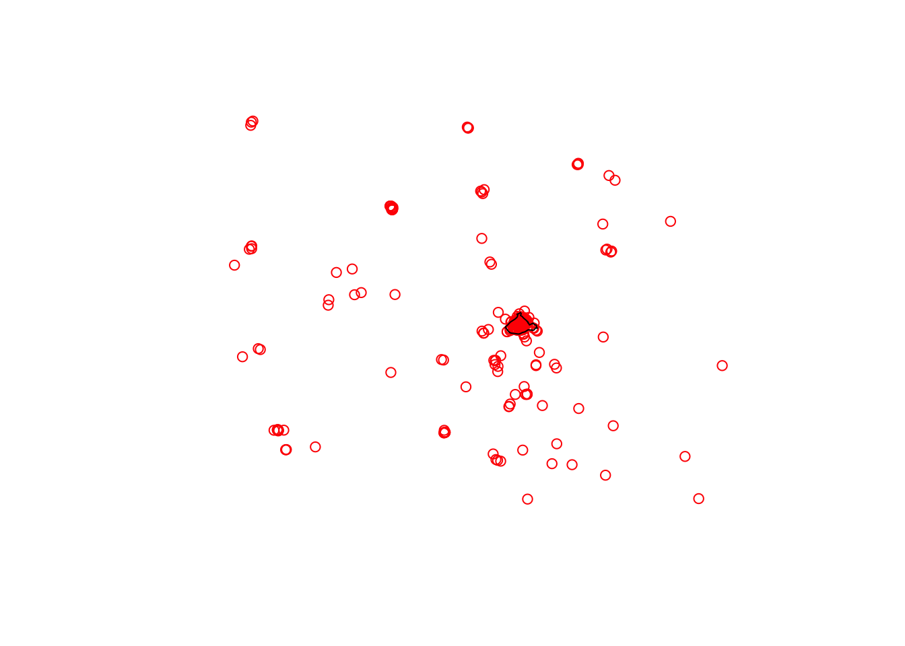
This is also the case for our crimes data:
plot(st_geometry(osm_bar_sf), col = 'red')
plot(st_geometry(crimes), col = 'blue', add = TRUE)
plot(st_geometry(city_centre), add = TRUE)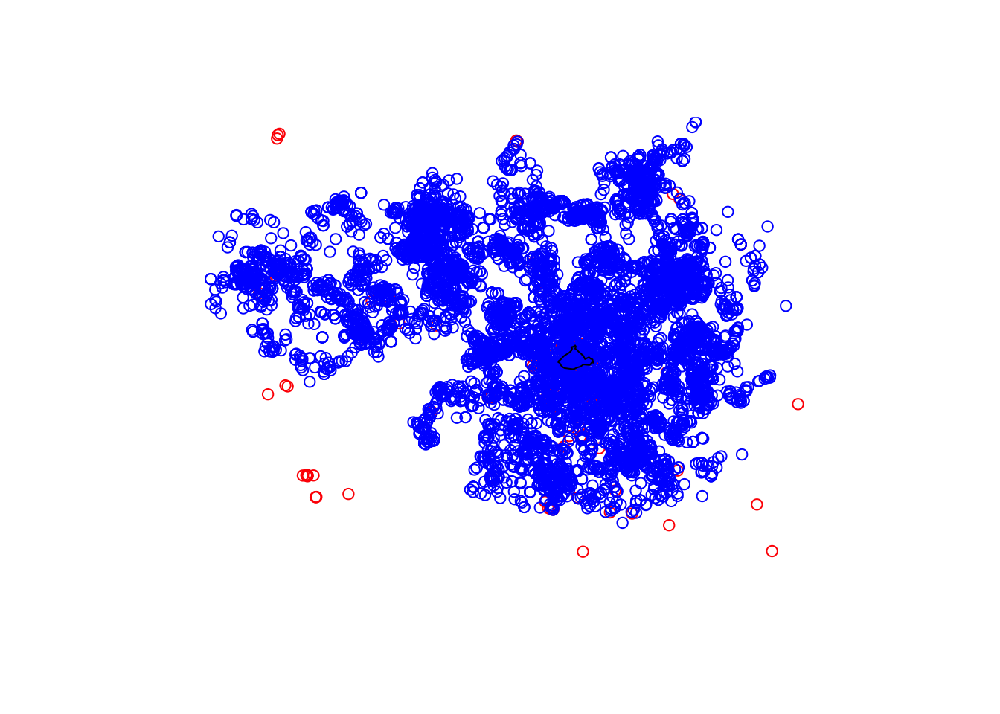
So if we really want to focus on city centre, we should create spatial objects for the crimes and the bars which include only those which fall within the City Centre ward boundary.
First things first, we check whether they have the same CRS.
st_crs(city_centre) == st_crs(crimes)## [1] TRUEWe do indeed, as we made sure in the previous section. Now we can move on to our spatial operation, where we select only those points within the city centre polygon. To do this, we first make a list of intersecting points to the polygon, using the st_intersects() function. This function takes two arguments, first the polygon which we want to subset our points within, and second, the points which we want to subset. We then use the resulting “cc_crimes” object to subset the crimes object to include only those which intersect (return TRUE for intersects):
# intersection
cc_crimes <- st_intersects(city_centre, crimes)
# subsetting
cc_crimes <- crimes[unlist(cc_crimes),]Have a look at this new “cc_crimes” object in your environment. How many observations does it have? Is this now fewer than the previous “crimes” object? Why do you think this is?
(hint: you’re removing everything that is outside the city centre polygon)
We can plot this again to have a look:
plot(st_geometry(city_centre))
plot(st_geometry(cc_crimes), col = 'blue', add = TRUE)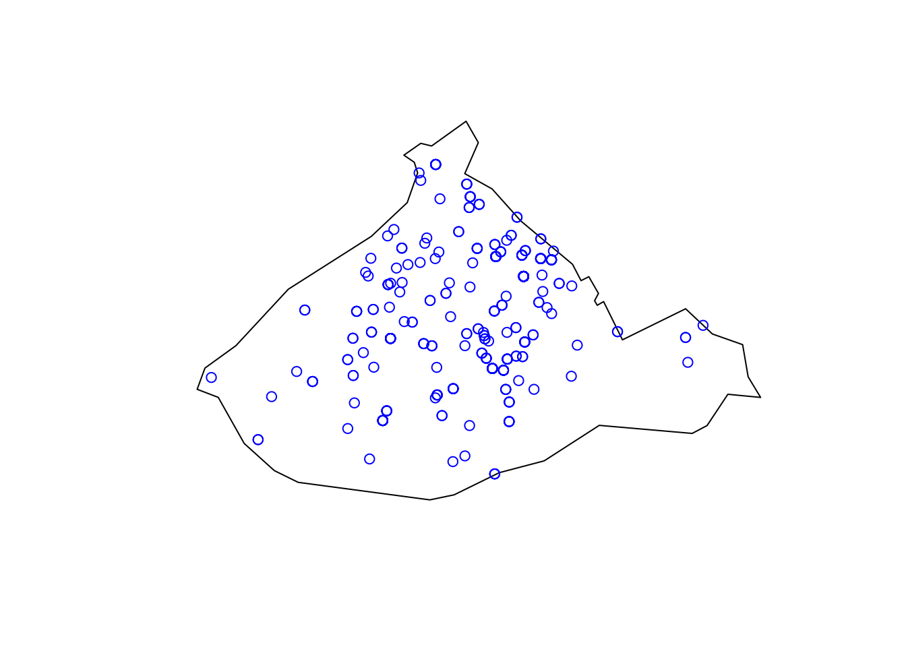
We have successfully performed our first spatial operation, we managed to subset our points data set or crimes to include only those crimes which are located inside the polygon for city centre.
We can do the same for the bars:
# intersection
cc_bars <- st_intersects(city_centre, osm_bar_sf)
# subsetting
cc_bars <- osm_bar_sf[unlist(cc_bars),]We can see that of the previous 259 bars, 102 are within the City Centre ward. We can plot our data now:
plot(st_geometry(city_centre))
plot(st_geometry(cc_bars), col = 'red', add = TRUE)
plot(st_geometry(cc_crimes), col = 'blue', add = TRUE)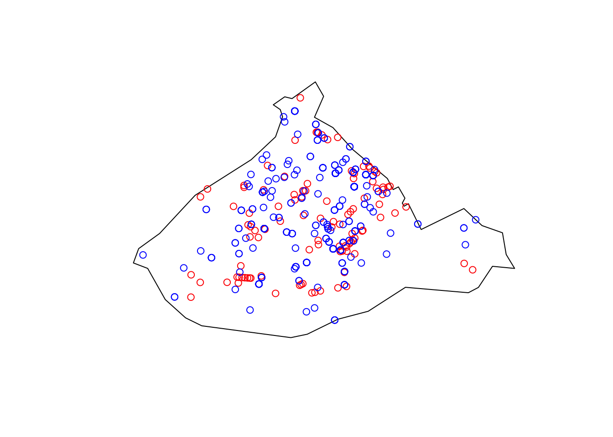
2.5.3 Building buffers
So we now have our bars and our violent crimes in Manchester City Centre. Let’s go back to our original question. We want to know about crime in and around our areas of interest, in this case our bars. But how can we count this? We have our points that are crimes, right? Well… How do we connect them to our points that are licensed premises?
One approach is to build a buffer around our bars, and say that we will count all the crimes which fall within a specific radius of this bar. What should this radius be? Well this is where your domain knowledge as criminologist or crime analyst comes in. How far away would you consider a crime to still be related to this pub? 400 meters? 500 meters? 900 meters? 1 km? What do you think? This is one of them it depends questions, where there is no universal right answer, instead it will depend on the environment, the question, and contextual factors. Whatever buffer you choose you should justify, and make sure that you can defend when someone might ask about it, as the further your reach obviously the more crimes you will include, and these might alter your results.
So, let’s say we are interested in all crimes that occur within 400 meters of each licensed premise. We chose 400m here as this is often the recommended distance for accessible bus stop guidance, so basically as far as people should walk to get to a bus stop. So in this case, we want to take our points, which represent the licensed premises, and build buffers of 400 meters around them.
You can do with the st_buffer() function. We pass two arguments to our function, the item which we want to buffer (the points in our `cc_bars’ object) and the size of this buffer.
Let’s quickly illustrate:
prem_buffer <- st_buffer(cc_bars, 1)You should get a warning here, saying “st_buffer does not correctly buffer longitude/latitude datadist is assumed to be in decimal degrees (arc_degrees).”. This message indicates that sf assumes a distance value (our size of the buffer, specified as ‘1’ above) is given in degrees. This is because we have our data in a Geographic Coordinate System (lat/long data in WSG 48).
If we want to calculate the size of the size of our buffer in a meaningful distance on our 2D surfaces, we can transform to a Projected Coordinate System, such as British National Grid. Let’s do this now:
bars_bng <- st_transform(cc_bars, 27700) #The code for BNG is 27700Now we can try again, with meters, specifying our indicated 400m radius:
bars_buffer <- st_buffer(bars_bng, 400)Let’s see how that looks:
plot(st_geometry(bars_buffer))
plot(st_geometry(bars_bng), add = T)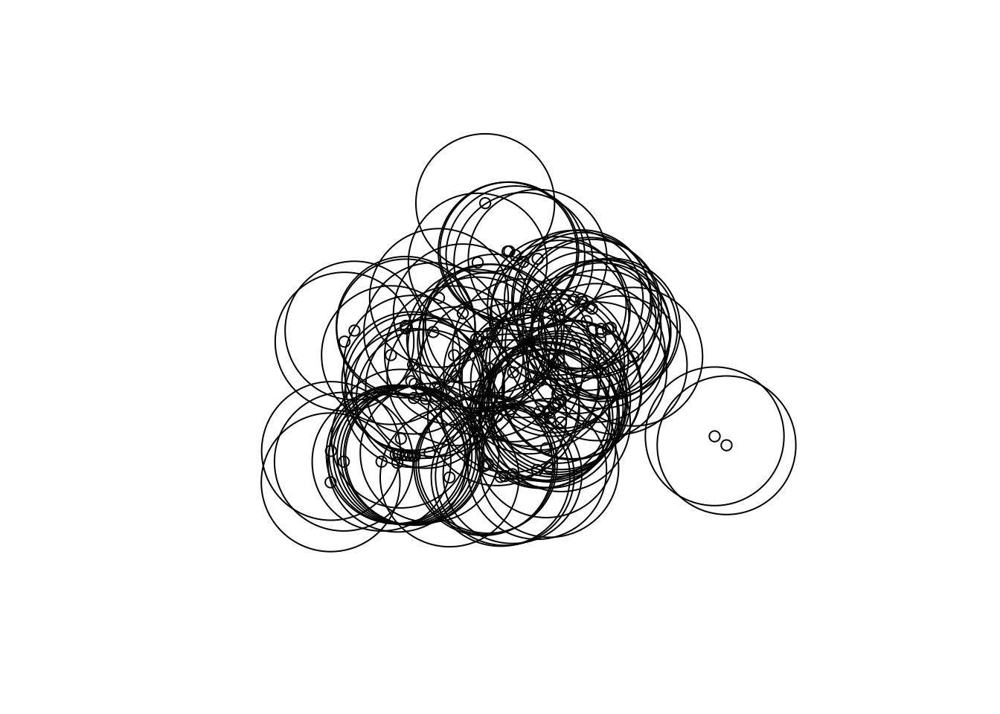
That should look nice and squiggly. We can see it looks like there is quite a lot of overlap here. Should we maybe consider smaller buffers? Let’s look at 100 meter buffers:
bar_buffer_100 <- st_buffer(bars_bng, 100) # create 100m buffer
# plot new buffers
plot(st_geometry(bar_buffer_100))
plot(st_geometry(bars_bng), add = T)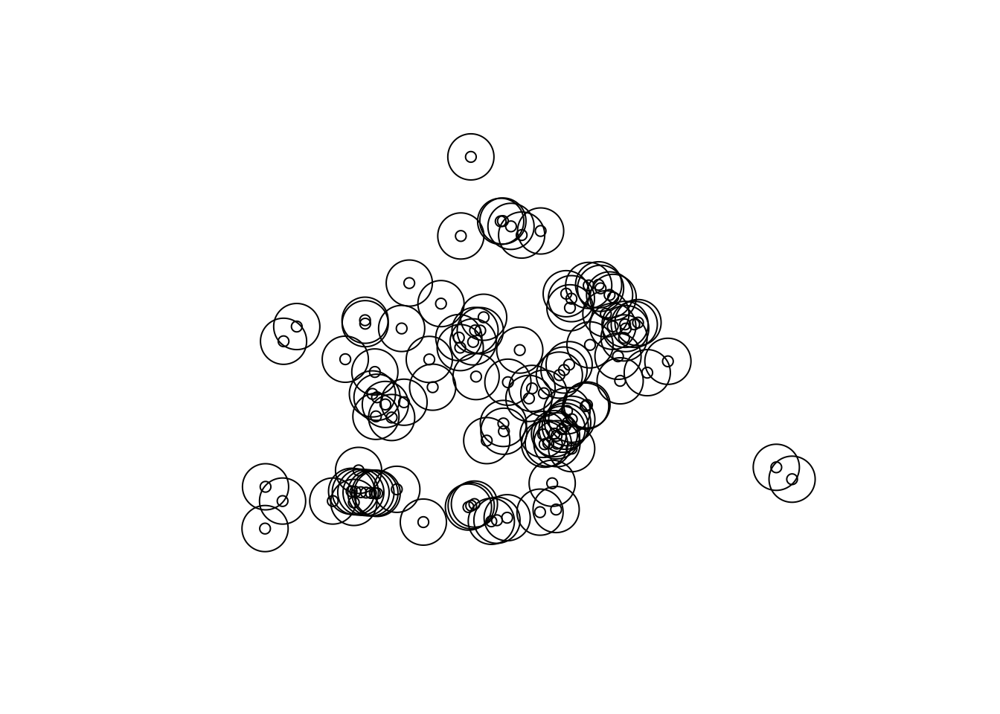
Still quite a bit of overlap, but this is possibly down to all the licensed premises being very densely close together in the city centre. We will discuss how to deal with this later on. For now, let’s go with these 100m buffers, and where a crime falls into an area of overlap, we will count it towards both premises.
The next step will be to count the number of crimes which fall into each buffer. Before we move on though, remember the CRS for our crimes is WGS 48 here, so we will need to convert our buffer layer back to this:
buffer_WGS84 <- st_transform(bar_buffer_100, 4326)Now let’s just have a look:
plot(st_geometry(buffer_WGS84))
plot(st_geometry(cc_crimes), col = 'blue', add = T)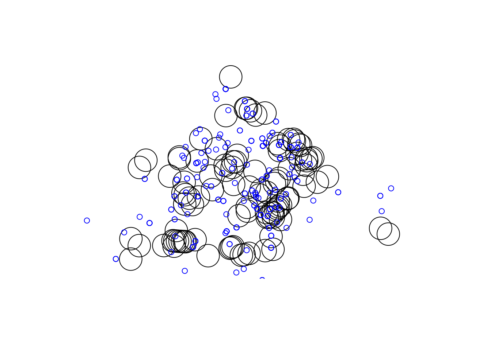
OKAY, so some crimes fall inside some buffers, others not so much. Well, let’s get to our next spatial operation, to be able to determine how many crimes happened in the 100m radius of each bar in Manchester City Centre.
2.5.4 Counting Points within a Polygon
When you have a polygon layer and a point layer - and want to know how many or which of the points fall within the bounds of each polygon, you can use this method of analysis. In computational geometry, the point-in-polygon (PIP) problem asks whether a given point in the plane lies inside, outside, or on the boundary of a polygon. As you can see, this is quite relevant to our problem, wanting to count how many crimes (points) fall within 100 meters of our licensed premises (our buffer polygons).
crimes_per_prem <- cc_crimes %>%
st_join(buffer_WGS84, ., left = FALSE) %>%
count(name)You now have a new dataframe, crimes_per_prem which has a column for the name of the bars, a column for the number of violent crimes that fall within the buffer, and a column for the geometry.
Take a moment to look at this table. Use the View() function. Which premises have the most violent crimes? If you are perhaps familiar with Manchester bars - what do you think? Are you surprised? I was!
Let’s see the bar with the most crimes:
crimes_per_prem %>% filter(n == max(n)) %>% select(name, n)## Simple feature collection with 1 feature and 2 fields
## Geometry type: POLYGON
## Dimension: XY
## Bounding box: xmin: -2.237934 ymin: 53.48095 xmax: -2.234921 ymax: 53.48275
## Geodetic CRS: WGS 84
## name n geometry
## 1 Crafty Pig 59 POLYGON ((-2.234921 53.4818...The bar with the highest number of crimes is Crafty Pig with 59 crimes. Keep this in mind for the next section…!
So in this case, we used the point-in-polygon approach, and counted the number of points which fell into each polygon. We saw earlier, with the buffers, that they often overlapped with one another. This means that a crime may have been counted multiple times. This resulting data therefore tells us: How many crimes happened within 100 meters of each bar. This is one way to approach the problem, but not the only way. In our next spatial operation, we will calculate distances in order to explore another way.
2.5.5 Distances: Finding the nearest point
Another way to solve this problem is to assign each crime (point) to the closest possible bar (other point). That is, look at the distances for each crime between it’s location and the locations of all the bars in Manchester, and then, from those, choose the bar which is the closest. Then, we can assign this bar as the location for that crime.
We can achieve this using the st_nearest_feature() function. This function takes our two sf objects, and for each row of the first one (x = cc_crimes), simply returns us the index of the nearest features from the second one (y = cc_bars). We combine with the mutate() function in order to create a new variable which contains this index for each crime. Let’s illustrate:
crime_w_bars <- cc_crimes %>% mutate(nearest_bar = st_nearest_feature(cc_crimes, cc_bars))If we now have a look at this new object “crime_w_bars,” we can see it is our crimes data, but we have a new column, which contains the index of the closest bar in the cc_bars dataframe, right at the end. So for example, for me the first point there, the nearest bar is that in location 84 (vectors in R are 1-indexed, not 0-indexed like many other languages). If we look at what is on the 84th row we see:
cc_bars[84]This returns all the 90+ variables for this row. If we want only the name, we can query for the 84th row and the 2nd column (which is name):
cc_bars[84, 2]## Simple feature collection with 1 feature and 1 field
## Geometry type: POINT
## Dimension: XY
## Bounding box: xmin: -2.236673 ymin: 53.4824 xmax: -2.236673 ymax: 53.4824
## Geodetic CRS: WGS 84
## name geometry
## 6404929536 Dive POINT (-2.236673 53.4824)You can see the name is “Dive.” For that first crime, in our data set, the nearest bar is “Dive” bar. Now, instead of going through this process manually for each point, we can use the index to subset within our mutate() function:
crime_w_bars <- cc_crimes %>% mutate(nearest_bar = cc_bars[st_nearest_feature(cc_crimes, cc_bars),2])Now we have new information in this nearest_bar column, the name of the nearest bar, and the geometry. We actually don’t need the geometry for now, as we will simply be counting the frequency of each bar, which we can join back to our cc_bars object, which has a geometry, so we can extract the $name element only, and remove the geometry. Like so:
crimes_per_prem_2 <- crime_w_bars %>% # create new crimes_per_prem_2 object
st_drop_geometry() %>% # drop (remove) the geometry
group_by(nearest_bar$name) %>% # group by to find frequecy of each bar (n crimes closest)
summarise(num_crimes = n()) %>% # count number of crimes which had each bar closest
rename(name = `nearest_bar$name`) # rename variable to 'name' To tie this back to our spatial object “cc_bars” we can use the left_join() function:
crimes_per_prem_2 <- left_join(cc_bars, crimes_per_prem_2, by = c("name" = "name"))Let’s see the bar with the most crimes with this approach:
crimes_per_prem_2 %>% filter(num_crimes == max(num_crimes, na.rm = TRUE)) %>% select(name, num_crimes)## Simple feature collection with 1 feature and 2 fields
## Geometry type: POINT
## Dimension: XY
## Bounding box: xmin: -2.236427 ymin: 53.48185 xmax: -2.236427 ymax: 53.48185
## Geodetic CRS: WGS 84
## name num_crimes geometry
## 1 Crafty Pig 50 POINT (-2.236427 53.48185)The bar with the highest number of crimes is still Crafty Pig, but now with 50 crimes. This means there is a difference in the number of crimes attributed to this bar bewteen the two approaches. Clearly there are 9 crimes which fell within the buffer in the first approach, but were closer to another bar in the dataset, and were instead attributed to that one using this approach.
So which is better?
This is once again up to you as the researcher and analyst to decide. They do slightly different things, and so will answer slightly different questions. With the nearest feature approach, instead of talking about the number of crimes within some distance to the bar, we are instead talking about for each crime, the closest venue. This might mean that we could be attributing crimes that happen quite far from the venue to it, just because it’s the closest within our data set. However, we are counting each crime only once. Pros and cons need to be weighed up, to make decisions.
2.5.6 Measuring distances
Let’s have a look at the bar called “Night & Day.” We can select this from the cc_bars, the buffers, and the crimes
nd <- cc_bars %>%
filter(name == "Night & Day")
nd_buffer <- bar_buffer_100 %>%
filter(name == "Night & Day") %>%
st_transform(4326)
nd_crimes <- crime_w_bars %>% filter(nearest_bar$name == "Night & Day") We can use mapply() and the st_union() function to draw a linestring between each crime and the closest bar (Night & Day in this case):
dist_lines <- st_sfc(mapply(function(a,b){st_cast(st_union(a,b),"LINESTRING")}, nd_crimes$geometry, nd_crimes$nearest_bar$geometry, SIMPLIFY=FALSE))We can then plot these to get an idea of what we’re looking at:
plot(st_geometry(nd_buffer))
plot(st_geometry(nd), col = "black", add = TRUE)
plot(st_geometry(nd_crimes), col = "blue", add = TRUE)
plot(st_geometry(dist_lines), add = TRUE)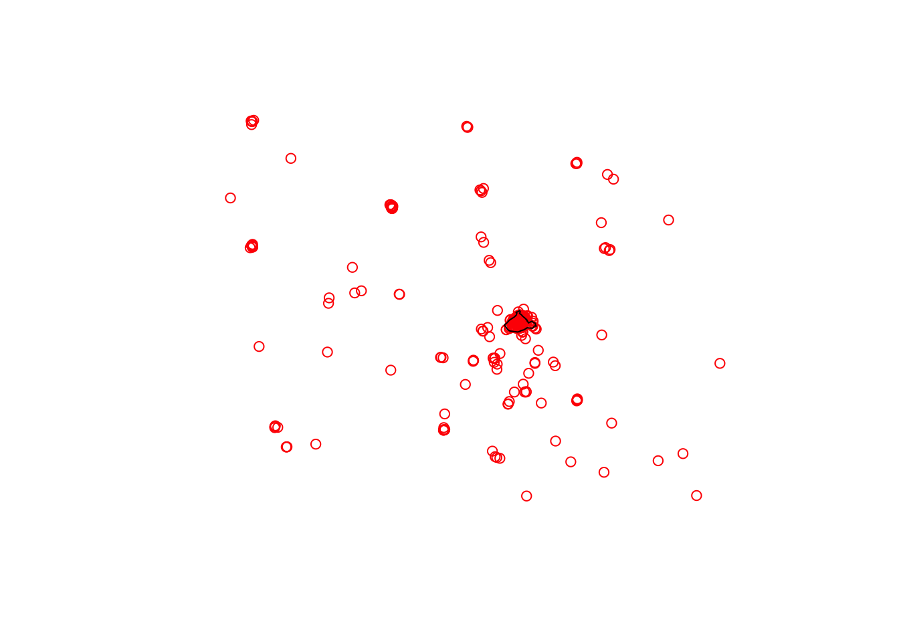
So we can see that the two locations where crimes occurred which were nearest to the Night & Day bar are both within the 100 meter buffer. But how far exactly are they?
You can use the st_distance() function to answer this question. We wrap this in the mutate() function in order to create a new column called distance which will contain for each row (each crime) the distance between that and its nearest bar (in this case Night & Day).
nd_crimes <- nd_crimes %>%
mutate(distance = st_distance(geometry, nearest_bar$geometry))Having a look at our newly created variable, we can see that the two crime locations are 69.3630151118733 and 45.3889988531455 away from Night & Day bar.
One thing you might find strange about the data is that why are all these crimes geocoded on top of one another? This is how the open data are released, using geo-masking by snapping crime locations to a geomask (a set of points). This is done to ensure anonymity in the data. In non-anonimysed data you might expect to see a little less overlap in your crime locations… Then with variation in distances between crimes and their nearest bars, we could use these distances to inform a buffer width for example. Anyway we will return to distances a little later with a better data set. But now, let’s move on to putting these outcomes on a map!
2.6 Plotting interactive maps with leaflet
In the first chapter, we introduced the ggplot2 package for making maps in R. In this chapter, we are going to introduce leaflet (http://leafletjs.com/) as one way to easily make some neat maps. It is the leading open-source JavaScript library for mobile-friendly interactive maps. It is very popular, used by websites ranging from The New York Times and The Washington Post to GitHub and Flickr, as well as GIS specialists like OpenStreetMap, Mapbox, and CartoDB, some of who’s names you’ll recognise from the various basemaps we played with in previous labs.
In this section of the lab we will learn how to make really flashy looking maps using leaflet. If you haven’t already, you will need to have installed the following packages to follow along:
install.packages("leaflet") #for mapping
install.packages("RColorBrewer") #for getting nice colours for your mapsOnce you have them installed, load them up with the library() function. To make a map, just load the leaflet library. You then create a map with this simple bit of code:
m <- leaflet() %>%
addTiles() And just print it:
m Not a super useful map, but it was really easy to make! You might of course want to add some content to your map.
You can add a point manually:
m <- leaflet() %>%
addTiles() %>%
addMarkers(lng=-2.230899, lat=53.464987, popup="University of Manchester")
m If you click over the highlighted point you will read our input text “University of Manchester.”
You can add many points manually, with some popup text as well:
latitudes = c(53.464987, 53.472726, 53.466649)
longitudes = c(-2.230899, -2.245481, -2.243421)
popups = c("You are here", "Here is another point", "Here is another point")
df = data.frame(latitudes, longitudes, popups)
m <- leaflet(data = df) %>%
addTiles() %>%
addMarkers(lng=~longitudes, lat=~latitudes, popup=~popups)
m We can also map polygons, not just points. Let’s plot our crimes on/near bars to illustrate. To do this, we can return to our buffers where we counted the number of crimes within 100m of each bar/ licensed premise (the “crimes_per_prem” object).
First, let’s pick a colour palette. We do this with the colorBin() function. We will discuss colour choices in maps in Chapter 5, for now, let’s just pick the “RdPu” palette. We should also specify the domain = parameter (what value to use for shading, in this case n, bins = - the number of crimes), the number of bins (in this case 5 - we will discuss this in detail in the coming chapters as well), and pretty = to use pretty breaks (this may actually mess with the number of bins specified in the bins parameter, but again, for now this is OK).
Let’s create this palette and save in an object called pal:
pal <- colorBin("RdPu", domain = crimes_per_prem$n, bins = 5, pretty = TRUE)Now we can make a leaflet map, where we add these polygons (the buffers) with the addPolygons() function, and call our palette, specifying again the variable to use for shading, as well as some other parameters. One to highlight specifically is the label parameter. This allows us to use a variable as a label for when a user clicks on our polygon (buffer). Here we specify the name of the bar with label = ~as.character(name).This way we not only shade each buffer with the number of crimes which fall inside it, but also include a little popup label with the name of the establishment:
leaflet(crimes_per_prem) %>%
addTiles() %>%
addPolygons(fillColor = ~pal(n), fillOpacity = 0.8,
weight = 1, opacity = 1, color = "black",
label = ~as.character(name)) %>%
addLegend(pal = pal, values = ~n, opacity = 0.7,
title = 'Violent crimes', position = "bottomleft") It’s not the neatest of maps, with all these overlaps, but we will talk about prettifying maps further down the line.
Now let’s say you wanted to save this map. You can do this by clicking on the export button at the top of the plot viewer, and choose the Save as Webpage option saving this as a .html file:
Then you can open this file with any type of web browser (safari, firefox, chrome) and share your map that way. You can send this to your friends, and make them jealous of your fancy map making skills.
2.7 Geocoding
We were making use of point of interest data from Open Street Map above, but it’s possible that we have a data set of bars that are not geocoded. In this case, we may have a list of bars with an associated address, which is clearly some sort of spatial information, but how would you put this on a map?
One solution to this problem is to geocode these addresses. We can use the package tidygeocoder to achieve this. This package takes an address given as character values, for example “221B Baker Street, Marylebone, London NW1 6XE” and returns coordinates, geocoding this address. So let’s say we have a dataframe of addresses (in this case only one observation):
addresses <- data.frame(name = "Sherlock Holmes",
address = "221B Baker Street, London, UK")We can then use the geocode() function to get coordinates for this address. We have to specify the column which has the address (in this case address), and the method to use for geocoding. See the help file for the function for the many options. For example if you are in the USA you may use “census.” Since we are global, we will use “osm,” which uses nominatim (OSM) to provide worldwide coverage. So given the above example:
addresses %>%
geocode(address, method = 'osm')## # A tibble: 1 x 4
## name address lat long
## <chr> <chr> <dbl> <dbl>
## 1 Sherlock Holmes 221B Baker Street, London, UK 51.5 -0.158To illustrate on scale, let’s have a look at another source of data on bars in Manchester. Manchester City Council have an Open Data Catalogue (http://open.manchester.gov.uk/open/homepage/3/manchester_open_data_catalogue) on their website, which you can use to browse through what sorts of data they release to the public. Like in many city open data portals, there are a some more and some less interesting data sets made available here. It’s not quite as impressive as the open data from some of the cities in the US such as New York (https://opendata.cityofnewyork.us/) or Dallas (https://www.dallasopendata.com/) but we’ll take it.
One interesting data set, especially for our questions about the different alcohol outlets is the Licensed Premises (http://www.manchester.gov.uk/open/downloads/file/169/licensed_premises) data set. This details all the currently active licenced premises in Manchester. You can see there is a link to download.
As always, there are a few ways you can download this data set. On the manual side of things, you can simply right click on the download link from the website, save it to your computer, and read it in from there, by specifying the file path. Remember, if you save it in your R working directory, then you just need to specify the file name, as the working directory folder is where R will first look for this file.
So without dragging this on any further, let’s read in the licensed premises data directly from the web:
lic_prem <- read_csv("http://www.manchester.gov.uk/open/download/downloads/id/169/licensed_premises.csv") %>% clean_names()You will likely get some warnings when reading this data, but you can safely ignore those. You can always check if this worked by looking to your global environment on the righ hand side and seeing if this lic_prem object has appeared. If it has, you should see it has 65535 observations (rows), and 36 variables (columns).
Let’s have a look at what this data set looks like. You can use the View() function for this:
View(lic_prem)We see that there is a field for “premisesname” which is the name of the premise, and two fields, “locationtext” “postcode” which refer to address information. To geocode these, let’s create a new column which combines the address and post code, and then use the geocode() function introduced above.
Note: this will take a while (like hours!) for the whole 65535 addresses data set, so just to illustrate for teaching purposes, we take the first 30
lic_prem <- lic_prem %>%
slice(1:30) %>% # Select first 30 venues
mutate(complete_address = paste(locationtext, postcode, sep=", ")) %>% # Create new complete_address column from locationtext and postcode using paste()
geocode(complete_address, method = 'osm') # geocode with osm methodNow we have these licenced premises geocoded, with brand new latitude and longitude information! We can use this to make a leaflet map of our venues!
lic_prem$latitude <- as.numeric(lic_prem$lat)
lic_prem$longitude <- as.numeric(lic_prem$long)
leaflet(data = lic_prem) %>%
addTiles() %>%
addMarkers(lng=~longitude, lat=~latitude, popup=~as.character(premisesname), label = ~as.character(premisesname))## Warning in validateCoords(lng, lat, funcName): Data contains 4 rows with either
## missing or invalid lat/lon values and will be ignoredGeocoding may come in handy when we have address data, or something similar but no geometry to use to map it.
2.8 Measuring distance more thoroughly
Before we end the chapter, we want to return to the spatial operation of measuring the distance between points. In crime science there is a whole area of research that, for example, focuses on studying the journey to crime by offenders and a common parameter studied is the average distance to crime from their home locations. In order to estimate these parameters, we first need to have a way to generate the distances. In this section, we will use another data set (this time from Madrid, Spain) to show a simpler example to look at the issue of geographical distance.
2.8.1 How far are police stations in Madrid?
To illustrate how to measure distance we will download data from the city of Madrid in Spain. Specifically we will obtain a csv file with the latitude and longitude of the police stations and a geojson file with the administrative boundary for the city of Madrid. Both are stored in our GitHub repository and can be accessed with the code below. We will also turn the .csv into a sf object with the appropriate coordinate reference system for this data.
#read csv data
comisarias <- read_csv("data/nationalpolice.csv")##
## ── Column specification ────────────────────────────────────────────────────────
## cols(
## NOMBRE = col_character(),
## X = col_double(),
## Y = col_double()
## )#set crs, read into sf object, and double check crs
polCRS <- st_crs(4326)
comisarias_sf <- st_as_sf(comisarias, coords = c("X", "Y"), crs = polCRS)
st_crs(comisarias_sf)## Coordinate Reference System:
## User input: EPSG:4326
## wkt:
## GEOGCRS["WGS 84",
## DATUM["World Geodetic System 1984",
## ELLIPSOID["WGS 84",6378137,298.257223563,
## LENGTHUNIT["metre",1]]],
## PRIMEM["Greenwich",0,
## ANGLEUNIT["degree",0.0174532925199433]],
## CS[ellipsoidal,2],
## AXIS["geodetic latitude (Lat)",north,
## ORDER[1],
## ANGLEUNIT["degree",0.0174532925199433]],
## AXIS["geodetic longitude (Lon)",east,
## ORDER[2],
## ANGLEUNIT["degree",0.0174532925199433]],
## USAGE[
## SCOPE["unknown"],
## AREA["World"],
## BBOX[-90,-180,90,180]],
## ID["EPSG",4326]]#create unique id for each row
comisarias_sf$id <- as.numeric(rownames(comisarias_sf))
#Read as sf boundary data for Madrid city
madrid <- st_read("data/madrid.geojson") ## Reading layer `madrid' from data source `/Users/reka/Desktop/crime_mapping/crime_mapping/data/madrid.geojson' using driver `GeoJSON'
## Simple feature collection with 1 feature and 4 fields
## Geometry type: MULTIPOLYGON
## Dimension: XY
## Bounding box: xmin: -3.888963 ymin: 40.31206 xmax: -3.518126 ymax: 40.64328
## Geodetic CRS: WGS 84#plot with leaflet to check all is fine
leaflet(comisarias_sf) %>%
addTiles() %>%
addMarkers(data = comisarias_sf) %>%
addPolygons(data = madrid)We can clearly see here that there are areas of the municipal term that are far away from any national police station, the North West part of the city which you can see is a green area but noticeably also the South East, which is mostly urban and in fact is the location of a known shanty town and open drug market (“Cañada Real,” you can read about it in the award-winning Briggs and Gamero (2017)).
2.8.2 Distance in geographical space
There are many definitions of distance in data science and spatial data science. A common definition of distance is the Euclidean distance, which simply is the length of a segment connecting two points in a two dimensional place. Because of the distortions caused by projections on a flat surface, a straight line on a map is not necessarily the shortest distance. Thus, another common definition used in geography is the great circle distance, which corresponds to an arc linking two points on a sphere and takes into account the spherical shape of the world.The great circle distance is useful, for example, to evaluate the shortest path when intercontinental distances are concerned.
We can compute both with the st_distance function of the sf package. This function can be used to measure the distance between two points, between one point and others or between all points. In the latter case we obtain a symmetric matrix of distances (NxN), taken pairwise between the points in our dataset. In the diagonal we find the combinations between the same points giving all null values.
Say we want to measure the distance between the main police headquarters (“Jefatura Superior de Policia,” row 34) and three other stations (say row 1, row 10, and row 25 in our dataset). We could use the following code for that:
# calculate distance
dist_headquarters <- st_distance(slice(comisarias_sf, 34),
slice(comisarias_sf, c(1, 10, 25)))
dist_headquarters # distance in meters## Units: [m]
## [,1] [,2] [,3]
## [1,] 8123.707 5096.02 8573.521The result is a matrix with a single row or column (depending on the order of the spatial objects) with a class of units.
Often we may want to reexpress these distances in a different unit. For this purpose the units package offers useful functionality, through the set_units() function.
set_units(dist_headquarters, "km")## Units: [km]
## [,1] [,2] [,3]
## [1,] 8.123707 5.09602 8.573521We can compute the distance between all police stations as well.
# calculate distance
m_distance <- st_distance(comisarias_sf)
# matrix dimensions
dim(m_distance)## [1] 34 34If you want to preview the top of the matrix you can use:
head(m_distance)2.8.3 A practical example to evaluate distance
For this practical example we will look at the Madrid data.
plot(madrid, max.plot = 1)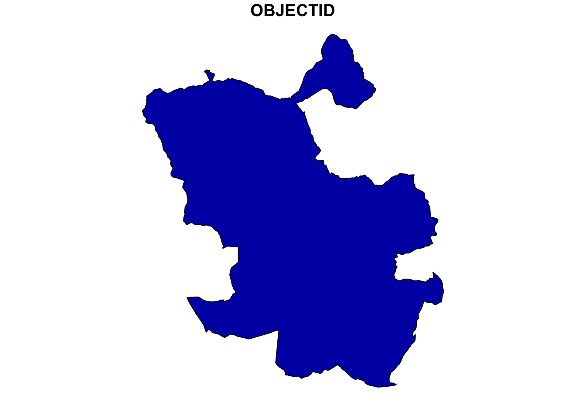
We know this map is in EPSG 4326.
st_crs(madrid)The distance here is expressed in degrees and we may prefer to evaluate distance in metrical system. Another way of saying this is that the current CRS uses geographic coordinates that account for earth’s curvature, when we may prefer a flat surface to measure distances. For this we will transform and reproject to EPGS 2062, which is appropriate for Madrid (see here for details https://epsg.io/?q=Spain%20kind%3APROJCRS).
madrid_meters <- st_transform(madrid, crs = 2062)Before we saw that some areas of Madrid are nowhere near a police station. Let´s say we want to get precise about this and we want to know how far different parts of the city of Madrid are from a police station, and we want to be able to show this in a map. Solving this means we have to define “parts of the city.” What we will do is to divide the city of Madrid into different cells of 250 meters within a grid using the st_make_grid function of the sf package.
``
madrid_grid <- st_make_grid(madrid_meters, cellsize = 250)
plot(madrid_grid)We are now going to just extract the cells within the perimeter of Madrid:
#only extract the points in the limits of Iceland
madrid_grid <- st_intersection(madrid_grid, madrid_meters)
#our fishnet now
plot(madrid_grid)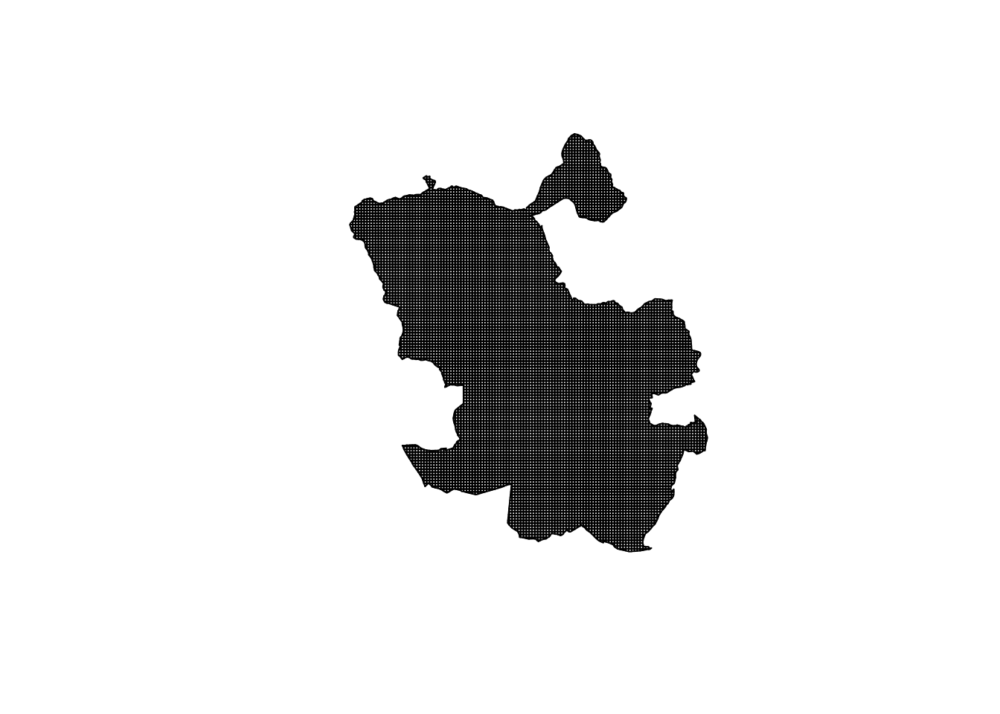
#Reproject to 4326 for later use
madrid_grid_wgs <- st_transform(madrid_grid, crs = 4326)So how do we look at distance from police stations here? We will measure the distance between each grid cell to all 39 police stations. To estimate the distance to the nearest police station we will find the minimum distance value for each grid, i.e. the distance to the nearest station.
comisarias_sf_meters <- st_transform(comisarias_sf, crs = 2062)
distances <- st_distance(comisarias_sf_meters, st_centroid(madrid_grid)) %>%
as_tibble()If you view the new object “distances” you will see there is a row for each police station and a column representing each of the 10082 cells in our grid. For using these distances in a leaflet map we will reproject back into 4326. And then will compute the shortest distance for each cell.
# Compute distances
police_distances <- data.frame(
# We want grids in a WGS 84 CRS:
us = st_transform(madrid_grid, crs = 4326),
# Extract minimum distance for each grid
distance_km = map_dbl(distances, min)/1000,
# Extract the value's index for joining with the ice-cream location info
location_id = map_dbl(distances, function(x) match(min(x), x))) %>%
# Join with the police station table
left_join(comisarias_sf, by = c("location_id" = "id"))
# Plot and examine distances
hist(police_distances$distance_km)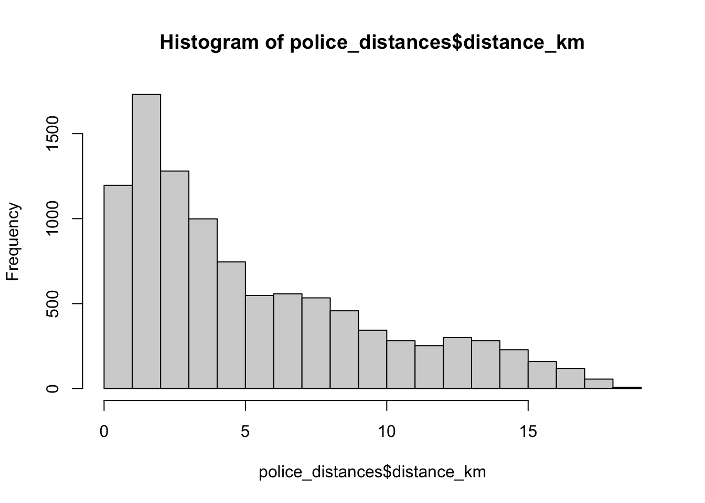
quantile(police_distances$distance_km)## 0% 25% 50% 75% 100%
## 0.01861606 1.73978931 3.81578329 7.95273442 18.17877100Now we are ready to use this data to plot a map. First we will adjust some aesthetics.
# Create more appropriate icon, taking it from Wikepedia commons and adjusting size
police_icon <- makeIcon("https://upload.wikimedia.org/wikipedia/commons/a/ad/189-woman-police-officer-1.svg", iconWidth = 12, iconHeight = 20)# Bin ranges for a nicer color scale
bins <- c(0,0.02,1.74,3.82,7.95,18.18)
# Create a binned color palette
pal <- colorBin(c("#0868AC", "#43A2CA", "#7BCCC4", "#BAE4BC", "#F0F9E8"),
domain = police_distances$distance_km, bins = bins,
reverse = TRUE)full_map <- leaflet() %>%
addTiles() %>%
addMarkers(data = comisarias_sf, icon = ~police_icon,
group = "Police stations") %>%
addPolygons(data = police_distances[[1]],
fillColor = pal(police_distances$distance_km),
fillOpacity = 0.8, weight =0,
opacity =1, color = "transparent", group = "Distances",
highlight = highlightOptions(weight = 2.5, color = "#666", bringToFront = TRUE, opacity= 1), popupOptions = popupOptions(autoPan = FALSE,
closeOnClick = TRUE, textOnly = T)) %>%
addLegend(pal = pal, values = (police_distances$distance_km), opacity = 0.8,
title = "Distance (Km)", position= "bottomright") %>%
addLayersControl(overlayGroups = c("Police Stations", "Distances"),
options = layersControlOptions(collapsed = FALSE))
full_mapAnd there you go. Just remember something. It is easy to misinterpret data and maps. You always need to care a great deal about measurement, quality of your data, and other potential issues affecting interpretation. When it comes to distance, and the movements of people and law enforcement personnel, for example, physical distance is not trivial, but time to arrival is also important and this is determined by factors other than Euclidean distance (e.g., availability and speed of transport, physical barriers, etc.). Our representation is always as good as the data we have. In Spain there are two other police forces (Guardia Civil, that patrols rural areas, and municipal civil, with jurisdiction for local administrative enforcement) that we are not representing here (that is, our data is incomplete). And we are not plotting the police stations in the nearby municipalities that are part of Madrid metropolitan area, around the edges.
2.9 Further reading
The various topics covered here are typically discussed in standard GIS textbooks, such as those we have recommended in previous chapters. You could see, for example, Chapter 9 of Bolstad (2019). But probably the best follow up to what we discuss here is Chapter 4 and 5 of Lovelace, Nowosad, and Muenchow (2019), available for free as a digital text at “https://geocompr.robinlovelace.net/,” for it provides a systematic introduction to how to perform these spatial operations with R. There is an online book on development by two giants of the R spatial community, Edzer Pebesma and Roger Bivand, that you can access at https://keen-swartz-3146c4.netlify.app/. The first 5 chapters of the book provide a strong backbone to understand sf objects in greater detail, coordinate systems, and key concepts for spatial data science.